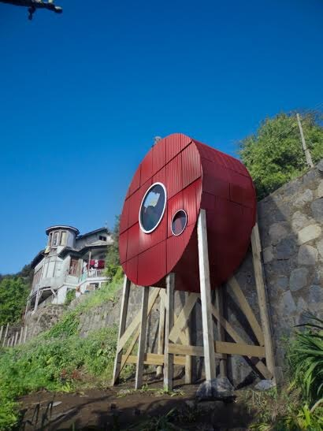
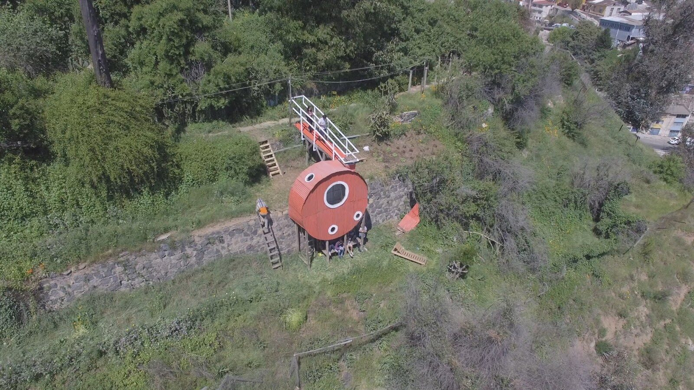
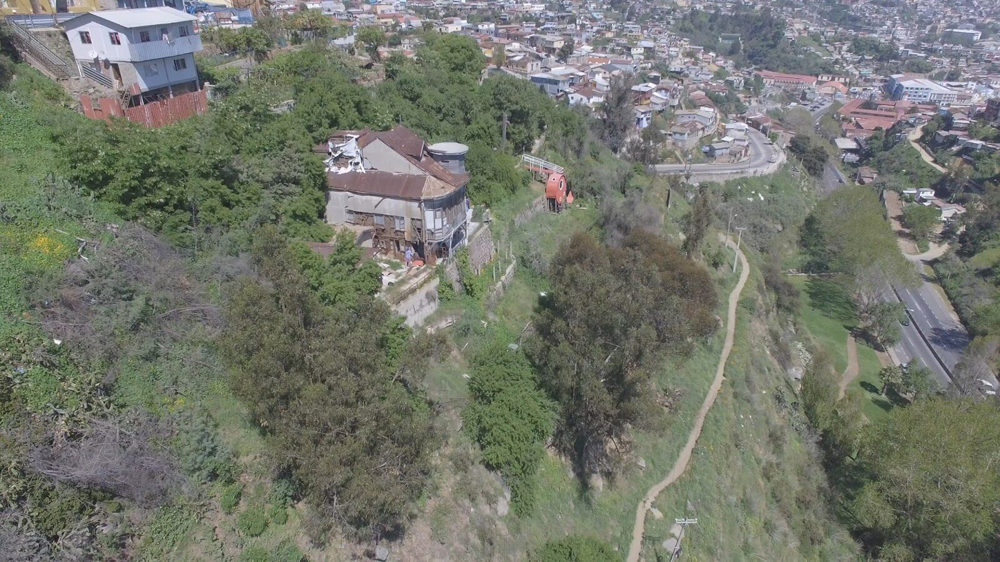
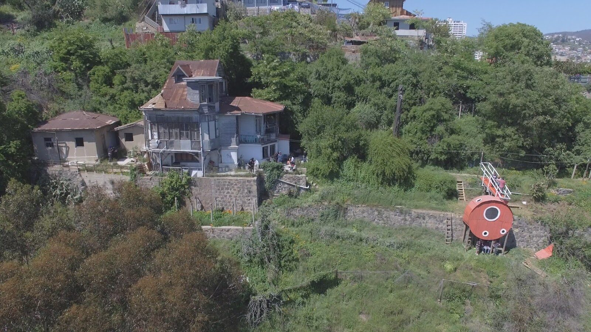
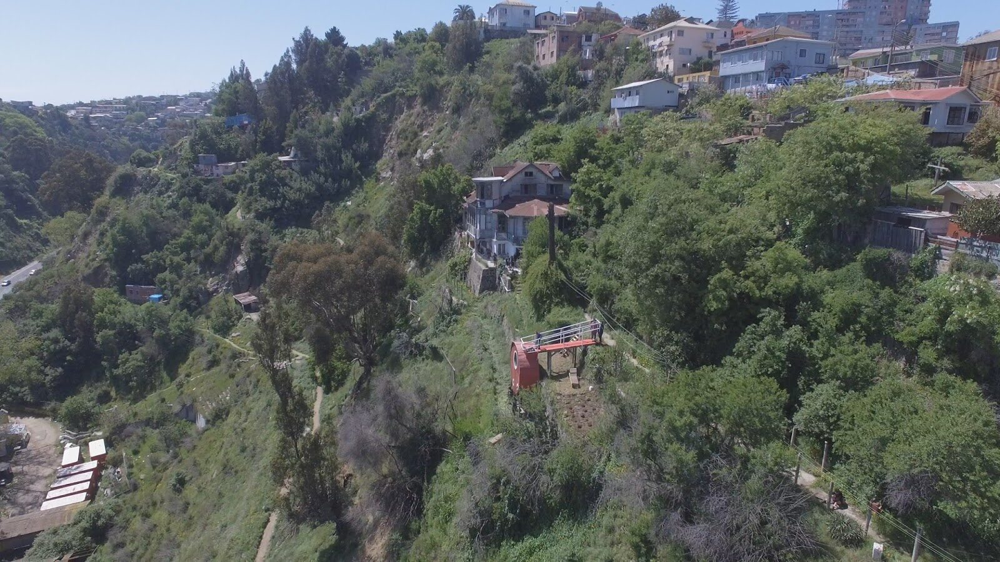
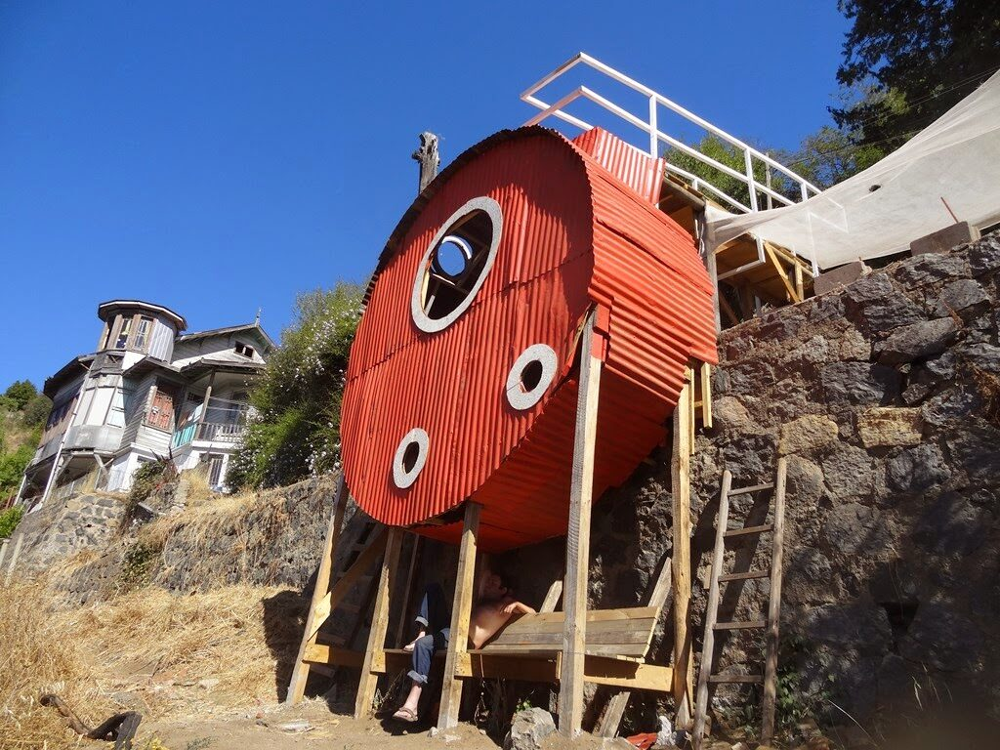
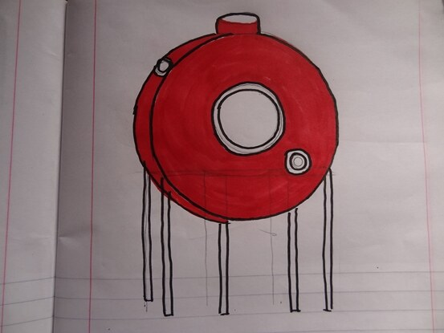
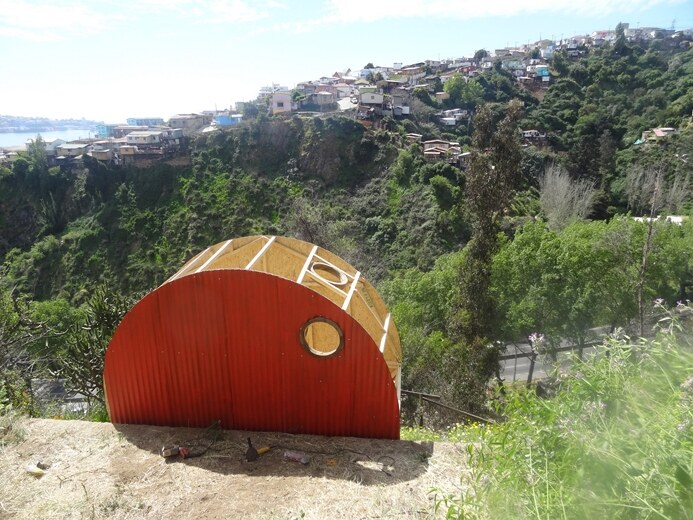
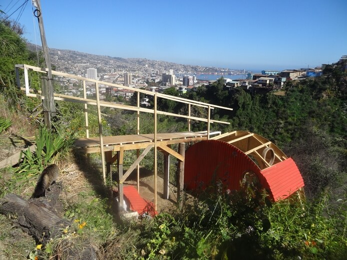

Dossier Nº 005
El Allegado Nº6 / El Jardín de las Delicias
Montaje de una estructura habitacional circular adosada a un muro y anclada en la terraza inferior, cubierta por latas de zinc, construida y pintada a semejanza de las casas de la quebrada de enfrente. La estructura está dividida en tres niveles.
El huerto en la terraza
Se intervino la terraza superior de acceso a esta instalación con un huerto orgánico destinado a la siembra de hortalizas — un modelo de ocupación de la quebrada opuesto al que se le da en la actualidad, donde las quebradas son utilizadas de preferencia como lugar para arrojar escombros y toda clase de desperdicios, como es precisamente el caso de la quebrada enfrente, junto a la Avenida Santos Ossa, en el acceso a la ciudad puerto.









33°03′S · 71°37′O